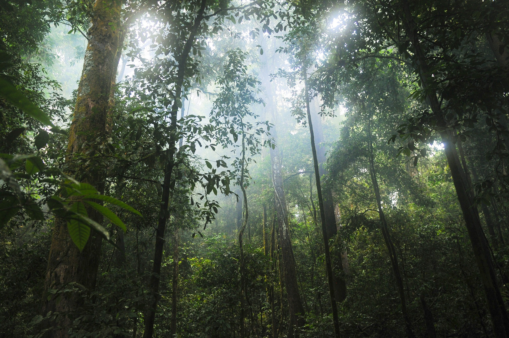
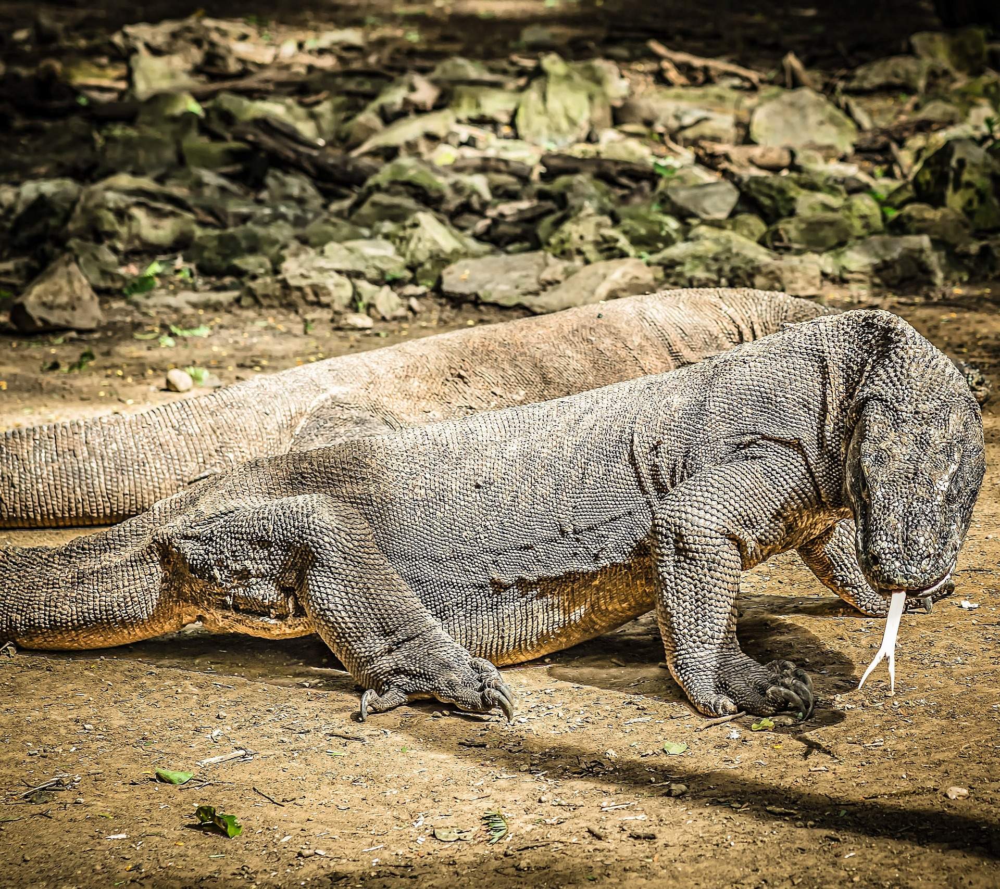
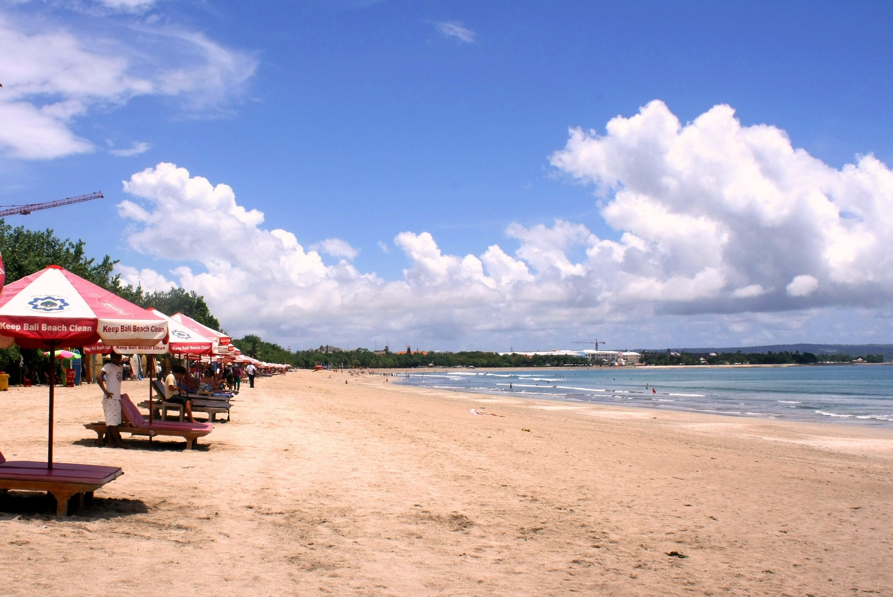
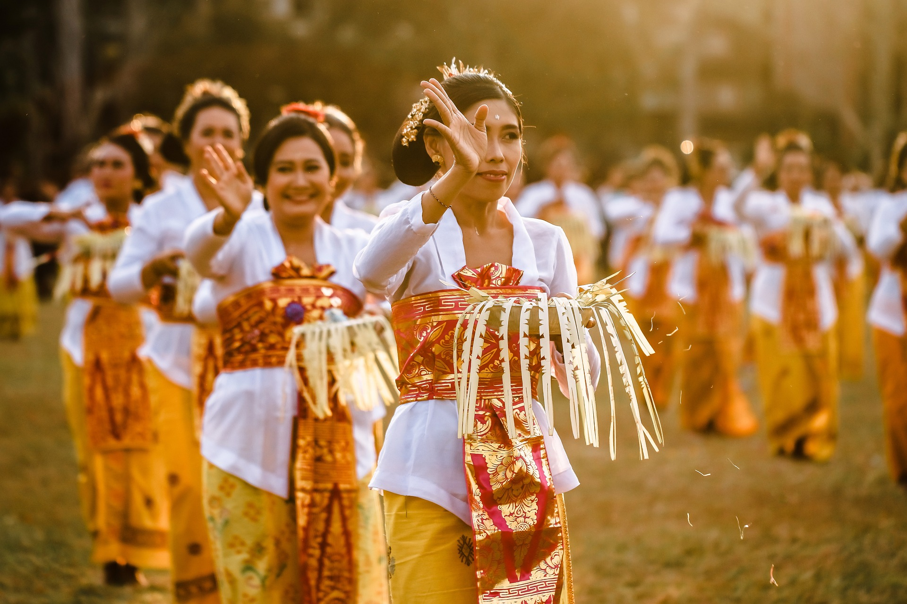

Indonesia adalah negara kepulauan yang terdiri dari lebih dari 17.000 pulau dengan lebih dari 80.000 kilometer garis pantai. Keanekaragaman geografis Indonesia mencakup pegunungan, hutan hujan tropis, dan lautan yang indah. Hal ini membuat Indonesia menjadi tempat yang sangat menarik untuk dikunjungi oleh para wisatawan. Wisata alam seperti pantai, gunung, dan hutan menjadi daya tarik yang utama di Indonesia. Pariwisata di Indonesia juga didukung oleh keberadaan berbagai budaya dan adat istiadat yang unik dan menarik. Beberapa tempat wisata populer di Indonesia antara lain Bali, Yogyakarta, Lombok, dan Raja Ampat.
Selain itu, Indonesia juga memiliki banyak kekayaan alam lainnya seperti Danau Toba di Sumatera Utara, Pulau Komodo di Nusa Tenggara Timur, dan Taman Nasional Ujung Kulon di Jawa Barat. Tempat-tempat ini menawarkan pengalaman wisata yang unik dan tidak bisa ditemukan di tempat lain.
Keanekaragaman budaya juga menjadi daya tarik tersendiri bagi para wisatawan. Indonesia memiliki lebih dari 300 kelompok etnis yang tersebar di seluruh wilayah. Masing-masing kelompok etnis memiliki keunikan dan kekhasan sendiri dalam hal bahasa, adat istiadat, seni dan budaya. Beberapa contoh budaya yang terkenal di Indonesia antara lain batik, tari kecak di Bali, wayang kulit, dan upacara adat di Tana Toraja.
Dalam hal kuliner, Indonesia juga memiliki banyak hidangan yang lezat dan unik. Beberapa hidangan khas Indonesia yang terkenal di dunia antara lain nasi goreng, sate, rendang, dan gado-gado.
Dengan kekayaan alam, budaya, dan kuliner yang begitu beragam, Indonesia menjadi destinasi wisata yang sangat menarik bagi para wisatawan dari seluruh dunia.
Kekayaan Alam Indonesia
Indonesia memiliki kekayaan alam yang sangat melimpah dan beragam. Sebagai negara kepulauan terbesar di dunia, Indonesia memiliki ribuan pulau yang tersebar di seluruh wilayahnya, sehingga kekayaan alam Indonesia sangat beragam dan mencakup berbagai jenis tanah, laut, dan udara. Berikut adalah beberapa contoh kekayaan alam Indonesia:
Pegunungan
Indonesia memiliki pegunungan yang indah dan menakjubkan, seperti Gunung Bromo di Jawa Timur, Gunung Rinjani di Lombok, Gunung Batur di Bali, dan Gunung Kerinci di Sumatera Barat.
Hutan Hujan Tropis

Indonesia memiliki hutan hujan tropis yang sangat luas, seperti Hutan Hujan Taman Nasional Gunung Leuser di Sumatera, Hutan Hujan Taman Nasional Lorentz di Papua, dan Hutan Hujan Taman Nasional Way Kambas di Lampung.
Satwa Liar

Indonesia memiliki satwa liar yang unik dan langka, seperti Orangutan di Kalimantan dan Sumatera, Komodo di Nusa Tenggara Timur, dan Badak Jawa di Jawa.
Pantai

Indonesia memiliki pantai-pantai yang indah dan menakjubkan, seperti Pantai Kuta di Bali, Pantai Parangtritis di Yogyakarta, Pantai Senggigi di Lombok, dan Pantai Ora di Maluku.
Dengan kekayaan alam yang melimpah dan beragam, Indonesia menjadi salah satu destinasi wisata alam terbaik di dunia dan banyak menarik minat para wisatawan dari seluruh dunia. Namun, kekayaan alam Indonesia juga perlu dijaga dan dilestarikan agar tetap lestari untuk generasi mendatang.
Budaya

Indonesia adalah negara yang memiliki kekayaan budaya yang sangat beragam. Hal ini karena Indonesia terdiri dari berbagai suku dan agama yang memiliki adat istiadat dan kepercayaan yang berbeda-beda. Setiap daerah di Indonesia memiliki keunikan tersendiri dalam hal seni, budaya, dan tradisi.
Salah satu seni budaya yang terkenal di Indonesia adalah tari tradisional. Setiap daerah di Indonesia memiliki tari tradisional yang unik dan berbeda-beda. Misalnya, tari kecak di Bali, tari saman di Aceh, tari piring di Sumatera Barat, dan masih banyak lagi.
Selain tari, Indonesia juga memiliki seni musik tradisional yang kaya dan beragam. Ada gamelan dari Jawa dan Bali, angklung dari Jawa Barat, dan masih banyak lagi. Selain itu, seni ukir dan tenun juga merupakan bagian yang tidak terpisahkan dari budaya Indonesia.
Indonesia juga memiliki berbagai macam adat istiadat yang unik dan menarik. Misalnya, upacara adat di Tana Toraja yang terkenal dengan penggunaan tongkonan, rumah tradisional dengan atap berbentuk tanduk kerbau. Di Bali, terdapat upacara keagamaan yang disebut dengan Nyepi, di mana seluruh aktivitas di Bali dihentikan selama sehari dan malam.
Budaya kuliner di Indonesia juga sangat beragam dan lezat. Setiap daerah di Indonesia memiliki masakan khas yang unik dan lezat, seperti rendang dari Padang, sate dari Madura, nasi goreng dari Jakarta, dan masih banyak lagi.
Dengan kekayaan budaya yang beragam dan unik ini, Indonesia menjadi negara yang sangat menarik untuk dikunjungi oleh wisatawan dari seluruh dunia.